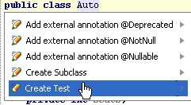

IntelliJ IDEA helps create test cases directly from class declaration. With the caret at the class name in the editor, press &shortcut:ShowIntentionActions;, and choose Create Test from the suggestion list:
